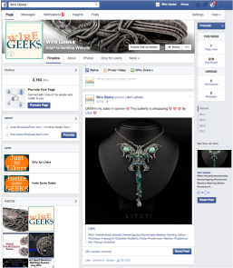

Creating the Web for Today's Small Business and Tomorrow’s Success
Specializing in an Assortment of Design/Marketing Trends;
Web Design, Web Development, Graphic Design, Multi-Media and Social Marketing.
Specializing in an Assortment of Design/Marketing Trends;
Web Design, Web Development, Graphic Design, Multi-Media and Social Marketing.
These days the world seems to revolve around the Internet. More and more businesses are turning the Web to market and organize. Through my experience as an online business owner as well as experience through Full Sail University, I have gained a solid grasp on modern web design. As more and more users rely to their mobile devices for information and advice, it’s important to design websites around this fact. I have deep knowledge in Responsive Design and UX using HTML5, CSS3 and responsive frameworks. Staying current and update on styles and trends can be equally important as the layout of a web design itself. My artistic eye and knowledge of design trends adds a fresh look to my web creations that is both functional and eye-catching.
Click Here to Learn More
The Internet brings a unique opportunity to Small Businesses. Social Media has become a leading resource in Marketing to the masses; world-wide. As the many turn to social websites, business too are seizing this opportunity to spread the visibility of their brand. Often this can be done organically or at a small advertising fee cost. When a campaign is executed correctly, this can level the playing field between small and big business. I have 4+ years experience in in marketing through my own Facebook and created Etsy chat Forum. Through my own experience and countless hours of research, I am able to offer advice and create solutions to guide any business through the social channels to create the perfect online brand persona.
Click Here to Learn More
By Nature, people are visual beings. Websites should not only have good verbal content, but also interesting and eye-pleasing visual content. Graphics can relay a message before user needs to read anything. Using images and graphics makes navigating websites quicker and more enjoyable for users. Much like graphics, video content is also an effective and quick way to express a message to users. Offering video content will offer an effective way to express a clear message to your user while adding visual appeal to a website. Through my experience with my own web business as well as training from Full Sail University, I have gained much experience with both Adobe Photoshop and Illustrator . I can use these programs for carrying a business brand any where from web to print. During my time at Full Sail, I have learned and used iMovie and Quicktime for creating professional quality short movies, slides and screencasts. I have used both Vimeo and YouTube as viable options as for creating responsive frames to keep websites space at a minimum for mobile users.
More about Grafix More about Multi-Media